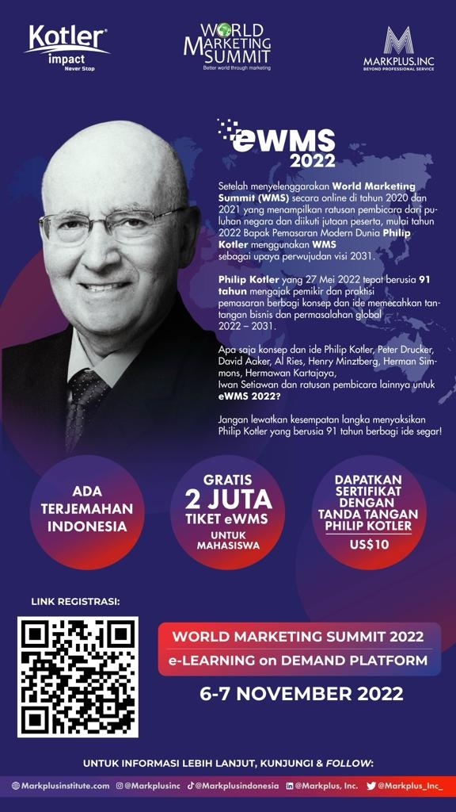

실시간 시청 (Live Streaming)과 반복 시청 (Learning on Demand)
- E-WMS 2022 실시간 시청과 반복시청은 무료입니다.
- eWMS-2022를 시청하기 위해서는https://worldmarketingsummit.org/signup/를 방문하여 다음 단계를 따르십시오.
- 등록(Sign Up)” 양식에 정보(이름, 성, 이메일, 거주 국가)를 기입합니다.
- 암호를 만듭니다. 암호는 10자를 초과해야 합니다.
- 제공받은 “Ticket Serial Number”, (예를 들면, WMS-22H-QZWPH-XUUCE)를 박스에 입력하십시오. Ticket Serial Number는 한번만 사용할 수 있습니다. (이후 로그인을 통하여 반복 접속 가능)
- 개인 정보 보호 정책 및 서비스 약관을 확인하십시오.
- 마지막으로 "등록(Sign Up)"을 클릭합니다.
- 등록이 완료되면 WMS로부터 "Please confirm your email address." 라는 이메일을 받게 됩니다. 계속하려면 "Confirm" 버튼을 누르십시오. 이후 등록에 사용된 이메일과 암호를 사용하여 로그인할 수 있습니다.
- 실시간 시청(Live Streaming)은 48시간 (2022/11/6, 09am ~ 2022/11/8, 09am, 한국시간)이며, 반복시청(Learning on Demand) 기간은 실시간 시청후 한달간 (2022/11/8~2022/12/7) 입니다.
- www.worldmarketingsummit.com 홈 화면 오른쪽 상단에 있는 메뉴에서 "Live Streaming" 또는 “Learning on Demand”에서 한달간 접속하여 시청할 수 있습니다.
수강 인증서 (e-Certificate of Attendance) 발급
- 수강 인증서는 현대 마케팅의 아버지로 불리는 ‘Philip Kotler’박사님의 사인이 들어간 e-WMS 수강을 인증하는 전자 인증서 (electronic Certificate)입니다. 아래 사진을 참고하세요.

- 수강 인증서 발급은 유료 (33,000원, 부가세 포함)이며, 2022/11/30 까지 신청할 수 있습니다.
- 수강 인증서를 받고자 하는 분은 인증서 발급비용을 아래 계정으로 입금한 후, 2022/12/9 부터 개별적으로 다음과 같이 다운로드 받을 수 있습니다.
- “수강 인증서(e-certificate of attendance)”를 다운로드 하기 위해서는, "내 계정(My Account)" 프로필을 작성한 후 "Create Wallet"를 클릭하면 다운로드할 수 있습니다.